Poll Reference
While some connectors, such as HTTP and FTP, utilize a polling process to actively retrieve messages from an external resource, most message processors in Mule are triggered when called by a previous element in a flow. If you want to arrange for a message processor to actively call a resource at regular intervals, use a Poll scope.
| For greater flexibility, you can also configure your Poll scope to use a Cron expression, see Poll Scheduler. |
Prerequisites
This document assumes that you are familiar with the Visual Editor in Anypoint Studio that you can use to create applications in Studio. Further, this document references Global Elements and the category of message processors known as scopes. Review Anypoint Studio Essentials to learn more about developing with Mule’s graphical user interface. Also review Anypoint Exchange for how to locate and install a connector using Exchange.
Configuring a Poll Wrapper
Studio Visual Editor
-
Drag a Poll scope onto the canvas.
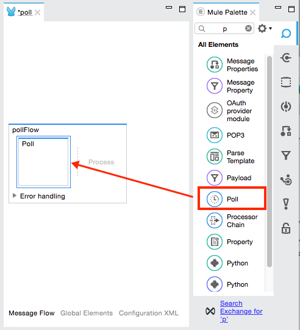 -
Drag an element inside the poll scope, for example a Twitter connector. Mule uses this message processor to regularly poll the Twitter API for new data to process.
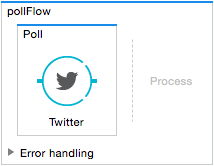 -
Configure the Twitter Connector:
-
Click the green plus sign to the right of Connector Configuration:
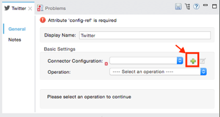 -
Log into twitter.com and sign in. If you don’t have a Twitter account, create one.
-
Change your browser location to https://apps.twitter.com.
-
Click Create New App. You need to specify an app name, description, web site URL, a callback URL, and agree to their developer agreement. You can use
http://www.example.comfor both the web site URL and callback URL as placeholders until you have actual URLs (if you plan to make your app available to others). -
Click the Keys and Access Tokens tab, and click Create my access token.
-
Copy the following credentials from your Twitter API application page to the Twitter connector configuration:
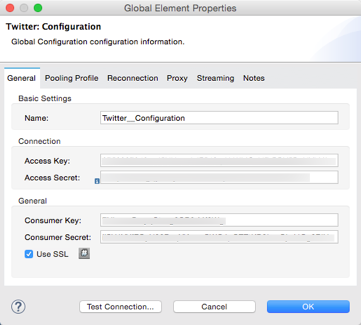-
Consumer Key
-
Consumer Secret
-
Access Token
-
Access Token Secret
-
-
-
Click Test Connection to ensure your credentials are correct.
-
Click OK.
-
In the Twitter properties screen, click the drop-down menu for Operation and:
Get user timeline by screen name -
Set the Screen Name to
MuleSoft. You can leave the remainder of the settings at their default values: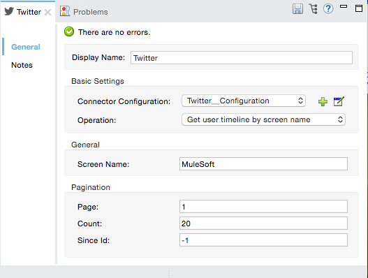 -
Add more message processors to your flow to perform specific business logic after polling for data. The example below uses a logger component. This logger uses the MEL expression
#[payload]to log the message payload collected by the Twitter connector every 1000 milliseconds.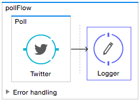
XML Editor or Standalone
-
Add a Poll element to your flow.
Element Description Sample XML poll
Polls an element at regular intervals.
<poll frequency="1000"doc:name="Poll">Attribute name Value Description Sample XML frequency
integer
The interval, in milliseconds, between calls. When set to 0 or a negative value, it switches to the default.
frequency="1000"doc:name
string
(Studio only) Displays a unique name for the poll scope in your application.
doc:name="Poll" -
Add a Twitter connector as a child element of the poll element.
Child Element Description Sample XML twitter:<operation>
Connects to Twitter. The "operation" is the activity Twitter performs. In the example at right, show recent tweets by a particular Twitter user.
<twitter:get-user-timeline-by-screen-name config-ref="Twitter"screenName="mulesoft"doc:name="Twitter"/>Attribute name Value Description XML screenName
string
Twitter account to return tweets from. In this example, the official MuleSoft account; you can use any valid Twitter account.
screenName="MuleSoft"config-ref
string
You must create a Twitter connector as a global element to reference here. For your Twitter connector, you need a Twitter developer account.
config-ref="Twitter"doc:name
string
(Studio only.) Name of the poll scope as it displays in your application.
doc:name="Twitter" -
Add more message processors to your flow to perform specific business logic after polling for data. The example below uses a logger component. This logger uses the MEL expression
#[payload]to log the message payload collected by the Twitter connector every 1000 milliseconds.Element Description Sample XML logger
Logs the message payload.
<logger message="#[payload]"level="INFO"` doc:name=`"Logger"/>Attribute name Value Description message
string or Mule expression
The content that logs to console. In this case, the Mule Expression
#[payload]outputs the message payload.level
string, one of ERROR, WARN, INFO, DEBUG, or TRACE
The priority level of the notification, in this case
INFO.doc:name
string
(Studio only) Name of the logger component as it appears in your application.
Complete Code Example
|
Keep in mind that for this example to work, you must manually configure the following values of the global Twitter connector (
|
<mule xmlns:tracking="http://www.mulesoft.org/schema/mule/ee/tracking" xmlns:twitter="http://www.mulesoft.org/schema/mule/twitter" xmlns:http="http://www.mulesoft.org/schema/mule/http"
xmlns:scripting="http://www.mulesoft.org/schema/mule/scripting"
xmlns="http://www.mulesoft.org/schema/mule/core" xmlns:doc="http://www.mulesoft.org/schema/mule/documentation" xmlns:spring="http://www.springframework.org/schema/beans" xmlns:xsi="http://www.w3.org/2001/XMLSchema-instance" xsi:schemaLocation="http://www.springframework.org/schema/beans http://www.springframework.org/schema/beans/spring-beans-current.xsd http://www.mulesoft.org/schema/mule/core http://www.mulesoft.org/schema/mule/core/current/mule.xsd http://www.mulesoft.org/schema/mule/twitter http://www.mulesoft.org/schema/mule/twitter/2.4/mule-twitter.xsd http://www.mulesoft.org/schema/mule/http http://www.mulesoft.org/schema/mule/http/current/mule-http.xsd http://www.mulesoft.org/schema/mule/ee/tracking http://www.mulesoft.org/schema/mule/ee/tracking/current/mule-tracking-ee.xsd">
<twitter:config name="Twitter" accessKey="" accessSecret="" consumerKey="" consumerSecret="" doc:name="Twitter">
<twitter:connection-pooling-profile initialisationPolicy="INITIALISE_ONE" exhaustedAction="WHEN_EXHAUSTED_GROW"/>
</twitter:config>
<flow name="test1" doc:name="test1" processingStrategy="synchronous">
<poll frequency="1000" doc:name="Poll">
<twitter:get-user-timeline-by-screen-name config-ref="Twitter" doc:name="Twitter" screenName="MuleSoft" sinceId="#[flowVars['lastID']]"/>
</poll>
<logger message="#[payload]" level="INFO" doc:name="Logger"/>
</flow>
</mule>Pausing Polling During Debugging
While trying to debug an application that utilizes polling functionality, it is challenging to constantly trigger flow processing so as to monitor Mule activity. To trigger polling during testing, use the Poll Resume and Poll Pause mechanisms available with Studio’s Visual Debugger.
-
Run your project in Debug Mode. (Refer to the Visual Debugger document for greater detail.)
-
In debug mode, notice the set of buttons in the title bar of the Poll scope (see image below). Use the green Poll Start-Pause button to trigger the poll and initiate the flow; click again to halt polling.
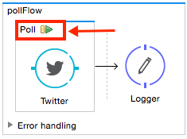 -
While running your project in debug mode, Studio opens a new Mule Debugger View tab the lower section of the screen. In the top-right of this tab, Studio displays two icons which allow you to stop or start all polls in your project at the same time.
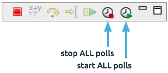
Polling for Updates using Watermarks
Rather than polling a resource for all its data with every call, you may want to acquire only the data that has been newly created or updated since the last call. To acquire only new or updated data, you need to keep a persistent record of either the item that was last processed, or the time at which your flow last polled the resource. In the context of Mule flows, this persistent record is called a watermark.
Typically, Mule sets a watermark to a default value the first time the flow runs, then uses it as necessary when running a query or making an outbound request (that is, calling a resource). Depending upon how the flow processes the results of the call, Mule may update the original value of the watermark or maintain the original value. As the value must persist across flows, Mule uses an object store for persistent storage. Built into the poll scope, object stores require no custom logic. You can configure watermarks by setting a couple of attributes.
Consider the following generic Mule flow.
This flow regularly polls a resource, then performs a series of operations on the resulting payload. With every poll, the application acquires only the data that is newly created or updated since the last call to the resource. In this example, Mule stores watermarks in two variables:
-
A persistent object store variable
-
An exposed flow variable
| If you’re already comfortably familiar with Mule components in general, you might find this blog post to be a clear explanation, as it explains the watermark by replicating its behavior with a series of other Mule components. |
The diagram below illustrates same flow including numbered steps. The step-by-step explanation below describes the activities Mule performs in the background with these two variables.
-
Mule looks for a variable in the object store with a name that matches the value of the Poll attribute
"Variable Name". In this case the chosen name islastModifiedID. -
If Mule finds a variable by this name, Mule exposes it by creating a flow variable (
flowVar) with the same name.The first time the poll runs, no object store variable exists by this name. In this case, Mule creates a flow variable anyway, and loads it with the value you provide in the Default Expressionattribute. In this case, the initial value is 0. -
Mule polls the resource. Connectors inside the poll should include filters that accept the
flowVarsas an attribute, as per the code below.sinceId="#[flowVars['lastModifiedID']]"
-
Mule executes the rest of the flow.
-
When the flow has completed execution, Mule updates the value of the flowVars according to either the
Update Expressionor a combination of theSelector Expressionand the chosenSelector. In this case, the Selector Expression is#[payload.id], and the Selector isLAST, so Mule inspects the ID attribute of each of the returned objects and picks the last of these as the new value for thelastmodifiedIDflowVars. -
Mule saves the flowVars back into the object store. If no variable existed in the object store in step 1, Mule creates a new variable in the object store.
If you define a value in the optional “Object Store” poll attribute, Mule searches for an object store by your value instead of the default user object store.
List of Watermark Attributes
| Attribute | Description |
|---|---|
Variable Name |
Identifies both the object store key that Mule uses to store the watermark, and the name of the flowVars where Mule exposes the watermark value to the user. XML Element: |
Default Expression |
If Mule cannot locate the object store key it uses the default expression to generate a value. This is useful for the first run of the flow. XML Element: |
Update Expression |
Mule uses the result of this expression to update the watermark once flow execution is complete. Use this expression as an alternative to a selector in case you need to follow a more complex logic. XML Element: |
Selector |
The criteria Mule uses to pick the next value for the flowVars. There are four available selectors: MIN, MAX, FIRST, and LAST. If you use this attribute, you must also provide a value for Selector Expression. XML Element: |
Selector Expression |
Mule executes this expression on every object returned by the Poll. The Selector then collects the returned values and picks one according to the chosen criteria. If you use this attribute, you must also provide a value for the Selector. XML Element: |
Object Store |
The default user object store. A reference to the object store in which you wish to store the watermarks. XML Element: |
Configuring Polling with Watermarks
Studio Visual Editor
-
Follow the steps above to create a flow that polls Twitter for data every 1000 milliseconds, then logs the message payload.
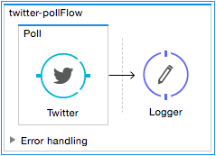 -
Click the flow name bar to select the flow, and in the properties editor, set the Processing Strategy to synchronous.
All flows use an asynchronous processing strategy by default. If you do not set the processing strategy to synchronous, polling with watermarks does not work! 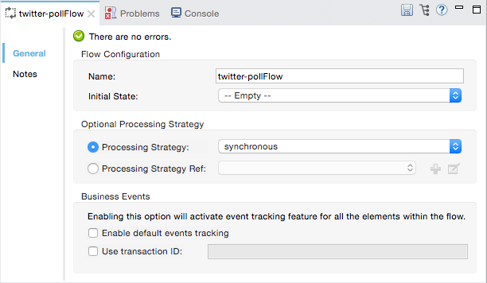 -
Click the Twitter connector and set Since Id to:
#[flowVars['lastID']]This value for the attribute instructs the connector to return only those tweets that have an ID greater than the value of the
lastIDvariable.lastIDis a flow variable that Mule creates, then updates every time the poll runs.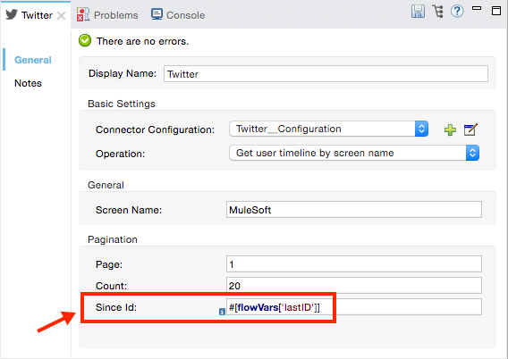 -
Select the poll scope, and edit its properties according to the table below.
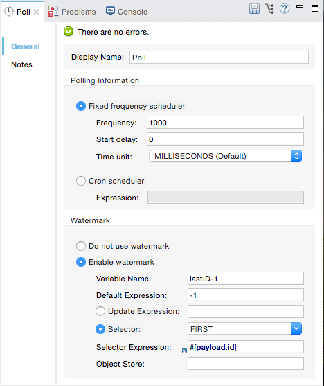Attribute Description Fixed Frequency Scheduler
Run the Poll every 1000 milliseconds.
Value:
1000Start Delay
Delays polling by 0 milliseconds.
Value:
0Time Unit
Use milliseconds as unit for the frequency and delay settings.
Value:
MILLISECONDSEnable Watermark
Enable using the Watermark.
Value:
trueVariable Name
Mule creates two variables:
-
A persistent object store variable with the provided name
-
A flow variable that the Twitter Connector references in its
sinceIDfilter.
Value:
lastID
XML:variable="lastID"
Default Expression
The value that
lastIDuses the first time Mule executes the poll, or whenever the watermark can’t be found.Value:
-1
XML:default-expression="-1"
Selector
Pick the FIRST value returned by the Selector Expression to update the
lastIDvariable each time the flow execution completes. In this case, it takes the ID of the first tweet in the generated output (that is, the most recent one).Value:
FIRST
XML:selector="FIRST"
Selector expression
Return the ID of each object in the generated output, this value is passed on to the Selector.
Value:
#[payload.id]
XML:selector-expression="#[payload.id]"
Update Expression
Not needed. Selector and Selector Expression are being used.
-
XML Editor or Standalone
-
Follow the steps above to create a flow that polls Twitter for data every 1000 milliseconds, then logs the message payload.
-
In the flow, set the value of the processingStrategy attribute to synchronous.
All flows use an asynchronous processing strategy by default. If you do not set the processing strategy to synchronous, polling with watermarks does not work! <flow name="test1" doc:name="test1" processingStrategy="synchronous"> -
Within the
pollscope, add awatermarkchild element with this value:<watermark variable="lastID" default-expression="-1" selector="FIRST" selector-expression="#[payload.id]"/>This keeps a persistent record of the last element that was processed, or the last time a sync was performed.
-
Add attributes to the
watermarkchild element:<watermark variable="lastID" default-expression="-1" selector="FIRST" selector-expression="#[payload.id]"/>-
variable="lastID"- String - Mule creates two variables:-
A persistent object store variable with the provided name.
-
A flow variable that the Twitter Connector references in its
sinceIDfilter.
-
-
default-expression= "-1"- Integer - The value thatlastIDuses the first time Mule executes the poll, or whenever the watermark can’t be found. -
selector="FIRST"- Pick the FIRST value returned by the Selector Expression to update thelastIDvariable each time the flow execution completes. In this case, it’s the ID of the first tweet in the generated output (that is, the most recent one). -
selector-expression="#[payload.id]"- Return the ID of each object in the generated output, this value is passed on to the Selector.
-
-
Add
sinceId="#[flowVars['lastID']]"to the Twitter connector statement:<twitter:get-user-timeline-by-screen-name config-ref="Twitter__Configuration" screenName="MuleSoft" sinceId="#[flowVars['lastID']]" doc:name="Twitter"/>The
sinceIDvalue is a string or Mule expression |Instructs the connector to return only those tweets with an ID greater than the value of thelastIDvariable.lastIDis a flow variable that Mule creates, then updates every time the poll runs.The code for this section is:
<flow name="test1" doc:name="test1" processingStrategy="synchronous"> <poll frequency="1000" doc:name="Poll"> <watermark variable="lastID" default-expression="-1" selector="FIRST" selector-expression="#[payload.id]"/> <twitter:get-user-timeline-by-screen-name config-ref="Twitter" doc:name="Twitter" screenName="MuleSoft" sinceId="#[flowVars['lastID']]"/> </poll> <logger message="#[payload]" level="INFO" doc:name="Logger"/> </flow>
Example Code
|
Keep in mind that for this example to work, you must manually configure the following values of the global Twitter connector (
|
<?xml version="1.0" encoding="UTF-8"?>
<mule xmlns:twitter="http://www.mulesoft.org/schema/mule/twitter" xmlns="http://www.mulesoft.org/schema/mule/core" xmlns:doc="http://www.mulesoft.org/schema/mule/documentation"
xmlns:spring="http://www.springframework.org/schema/beans"
xmlns:xsi="http://www.w3.org/2001/XMLSchema-instance"
xsi:schemaLocation="http://www.springframework.org/schema/beans http://www.springframework.org/schema/beans/spring-beans-current.xsd
http://www.mulesoft.org/schema/mule/core http://www.mulesoft.org/schema/mule/core/current/mule.xsd
http://www.mulesoft.org/schema/mule/twitter http://www.mulesoft.org/schema/mule/twitter/current/mule-twitter.xsd">
<twitter:config name="Twitter__Configuration" accessKey="<access_key>" accessSecret="<access_secret>" consumerKey="<consumer_key>" consumerSecret="<consumer_secret>" doc:name="Twitter: Configuration"/>
<flow name="pollFlow">
<poll doc:name="Poll">
<twitter:get-user-timeline-by-screen-name config-ref="Twitter__Configuration" screenName="MuleSoft" doc:name="Twitter"/>
</poll>
<logger level="INFO" doc:name="Logger"/>
</flow>
</mule>Variation For Updating the Flow Variable
As described above, the watermark element includes two ways to update the flow variable (flowVars) every time flow execution completes:
-
Set an expression in the attribute
update-expression -
Set an expression in the attribute
selector-expression, and a criteria inselector
However, neither of these options support exception handling strategies; you may wish to add more complex logic rules to the process of updating the flow variable. To do so, you can use other message processors in your flow to set the flow variable using custom logic.
Add code, such as the example below, into a Java class, wrapping your extra custom logic around it.
#[flowVars['lastModifiedID']] = #[payload.id]
If you use custom logic to update the flowVars, click the radio button for update-expression, but leave the field empty. If the update-expression attribute has a value, Mule stores new watermark information on the flowVars according to that attribute, and overwrites any custom logic you may have defined for updating the variable.
|
The image below displays a sample flow that updates the flowVars using custom logic; note the empty update-expression attribute.
Using Watermarks with Auto-Paging
Any connector which is enabled for auto-paging allows you to process large data sets in separate batches. This capability mitigates for memory overload, but also imposes certain conditions when used in conjunction with watermarks. The following example illustrates the recommended method for using watermarks when polling a connector that auto-pages its response.
The main difficulty when dealing with auto-paging connectors is that collection object that they output can only be iterated through once. Selecting a watermark, such as the maximum value, would require iterating through the collection, which would consume it. Therefore, this action is not performed in the poll element, but rather when you iterate through the collection later in your flow, such as when you apply a for each element.
Studio Visual Editor
-
Place an auto-paging-enabled connector, such as Salesforce inside a poll scope.
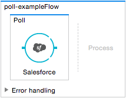 -
Configure the connector according to the following screenshot. Note that the query orders the output in ascending order of
LastModifiedDateso that the last item in the list is the newest. This detail is critical. This screen sets the following values:-
Display name:
Salesforce -
Config Reference:
Salesforce -
Operation:
Query -
Language:
DataSense Query Language -
Query Text: (combine into one line in the connector’s field)
SELECT Email,FirstName,LastModifiedDate,LastName FROM Contact WHERE LastModifiedDate > #[flowVars['nextSync']] ORDER BY LastModifiedDate ASC LIMIT 100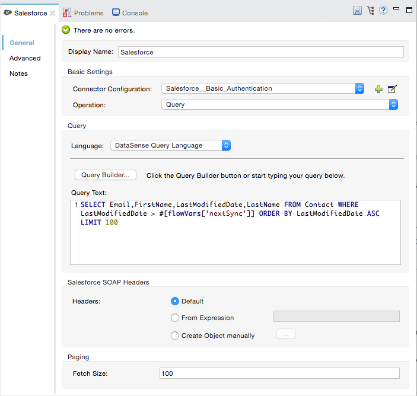Be sure to configure the order of the output so that the LAST element in the collection is the most recent one! Configure the poll scope according to the table below. The watermark is a variable named
lastUpdated. When you iterate through the collection, later in your flow, Mule updates the value of the variable to the value you put in the Selector field, in this case[payload['lastUpdated']]. Its default value is the result of evaluating the following expression:['YESTERDAY'].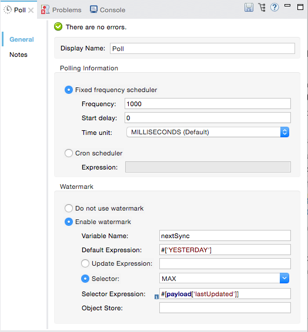Attribute name Description Sample XML Variable Name
The watermark is a variable named
lastUpdatedvariable="lastUpdated"default-expression
The default value of
lastUpdatedis the result of evaluating#['YESTERDAY'].default-expression=#['YESTERDAY']Selector
Criteria to pick which value to use, out of all of the ones in the collection
selector="MAX"Selector Expression
Mule updates
lastUpdatedto the Maximum value in the collection of#[payload['lastUpdated']]selector-expression=#[payload['lastUpdated']]
-
-
Next, you need to process the output of the connector with an element that can handle collections, such as a
foreachscope (for more information, see foreach). The message processors set within the Foreach scope process each item in a collection individually, one at a time. While it iterates through the collection, it communicates with the poll scope, sending it the selector values so that the MAX can be picked.Keep in mind that when dealing with collections with auto-paging, you need to process the collection at some point of your flow. If you don’t, the selector in your poll won’t be updated. 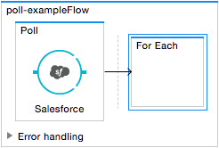 -
Inside the Foreach scope, place a Logger. Set its message to
#[payload['lastUpdated]], which logs the time of the last update for every element in your collection.
XML Editor or Standalone
-
Add a poll element to your flow, then add a watermark variable as a child element. The watermark is a variable named
lastUpdated. When the flow has finished processing, Mule updates the value of the variable to the value of the flow variable by the same name,lastUpdated. Its default value is the result of evaluating the following expression:#['YESTERDAY'].<poll frequency="100000" doc:name="Poll"> <watermark variable="nextSync" default-expression="#['YESTERDAY']" selector="MAX" selector-expression="#[payload['lastUpdated']]"/> </poll>Attribute name Description Sample XML Variable Name
The watermark is a variable named
lastUpdatedvariable="lastUpdated"default-expression
The default value of
lastUpdatedis the result of evaluating#['YESTERDAY'].default-expression=#['YESTERDAY']Selector
Criteria to pick which value to use, out of all of the ones in the collection
selector="MAX"Selector Expression
Mule updates
lastUpdatedto the Maximum value in the collection of#[payload['lastUpdated']]selector-expression=#[payload['lastUpdated']]The watermark is a variable named
lastUpdated. When you iterate through the collection, later in your flow, Mule updates the value of the variable to the value you put in the Selector field, in this case[payload['lastUpdated']]. Its default value is the result of evaluating the following expression:['YESTERDAY']. -
Add an auto-paging-enabled connector as a child element of the poll element. Note that the query orders the output in ascending order of LastModifiedDate so that the last item in the list is the newest. This detail is critical.
<poll frequency="100000" doc:name="Poll"> <watermark variable="nextSync" default-expression="#['YESTERDAY']" update-expression="#[flowVars['lastUpdated']]"/> <sfdc:query config-ref="" query="dsql:SELECT Email,FirstName,LastModifiedDate,LastName FROM Contact WHERE LastModifiedDate > #[flowVars['nextSync']] ORDER BY LastModifiedDate ASC LIMIT 100" doc:name="Salesforce"/> </poll>Be sure to configure the order of the output so that the LAST element in the collection is the most recent one! -
Next, you need to process the output of the connector with an element that can handle collections, such as a
foreachscope (for more information, see foreach). The message processors set within the Foreach scope process each item in a collection individually, one at a time. While it iterates through the collection, it communicates with the poll scope, sending it the selector values so that the MAX can be picked.Keep in mind that when dealing with collections with auto-paging, you need to process the collection at some point of your flow. If you don’t, the selector in your poll won’t be updated. -
Inside the Foreach scope, place a Logger. Set its message to
#[payload['lastUpdated]], which logs the time of the last update for every element in your collection.<logger message="#[payload['lastUpdated]]" level="INFO" doc:name="Logger"/>
<mule xmlns:netsuite="http://www.mulesoft.org/schema/mule/netsuite" xmlns:tracking="http://www.mulesoft.org/schema/mule/ee/tracking" xmlns="http://www.mulesoft.org/schema/mule/core" xmlns:data-mapper="http://www.mulesoft.org/schema/mule/ee/data-mapper" xmlns:sfdc="http://www.mulesoft.org/schema/mule/sfdc" xmlns:doc="http://www.mulesoft.org/schema/mule/documentation" xmlns:spring="http://www.springframework.org/schema/beans" xmlns:core="http://www.mulesoft.org/schema/mule/core" xmlns:xsi="http://www.w3.org/2001/XMLSchema-instance" xsi:schemaLocation="http://www.mulesoft.org/schema/mule/ee/data-mapper http://www.mulesoft.org/schema/mule/ee/data-mapper/current/mule-data-mapper.xsd
http://www.mulesoft.org/schema/mule/sfdc http://www.mulesoft.org/schema/mule/sfdc/current/mule-sfdc.xsd
http://www.springframework.org/schema/beans http://www.springframework.org/schema/beans/spring-beans-current.xsd
http://www.mulesoft.org/schema/mule/core http://www.mulesoft.org/schema/mule/core/current/mule.xsd
http://www.mulesoft.org/schema/mule/ee/tracking http://www.mulesoft.org/schema/mule/ee/tracking/current/mule-tracking-ee.xsd
http://www.mulesoft.org/schema/mule/netsuite http://www.mulesoft.org/schema/mule/netsuite/current/mule-netsuite.xsd">
<sfdc:config name="Salesforce" username="example@mulesoft.com.sap" password="password" securityToken="fKESXfSAj4398t3uhh8xotw9Uc" doc:name="Salesforce">
<sfdc:connection-pooling-profile initialisationPolicy="INITIALISE_ONE" exhaustedAction="WHEN_EXHAUSTED_GROW"/>
</sfdc:config>
<flow name="example1" >
<poll frequency="100000" doc:name="Poll">
<watermark variable="nextSync" default-expression="#['YESTERDAY']" selector="MAX" selector-expression="#[payload['lastUpdated']]"/>
<sfdc:query config-ref="Salesforce" query="dsql:SELECT Email,FirstName,LastModifiedDate,LastName FROM Contact WHERE LastModifiedDate > #[flowVars['nextSync']] ORDER BY LastModifiedDate ASC LIMIT 100" doc:name="Salesforce"/>
</poll>
<foreach doc:name="For Each">
<logger message="#[payload['lastUpdated]] " level="INFO" doc:name="Logger"/>
</foreach>
</flow>
</mule>Polling in a Cluster
When running in a cluster, only the server identified as the primary node performs the polling. In case the primary node goes down, then another node in the cluster becomes the primary node and starts polling instead (failover).
See Also
-
Learn how to configure a polling schedule.
-
Read an article in the MuleSoft Blog about using watermarks to synchronize two systems
-
Learn more about Logger.
-
Learn more about Anypoint Connectors and auto-paging.
-
Learn more about flow processing strategies.